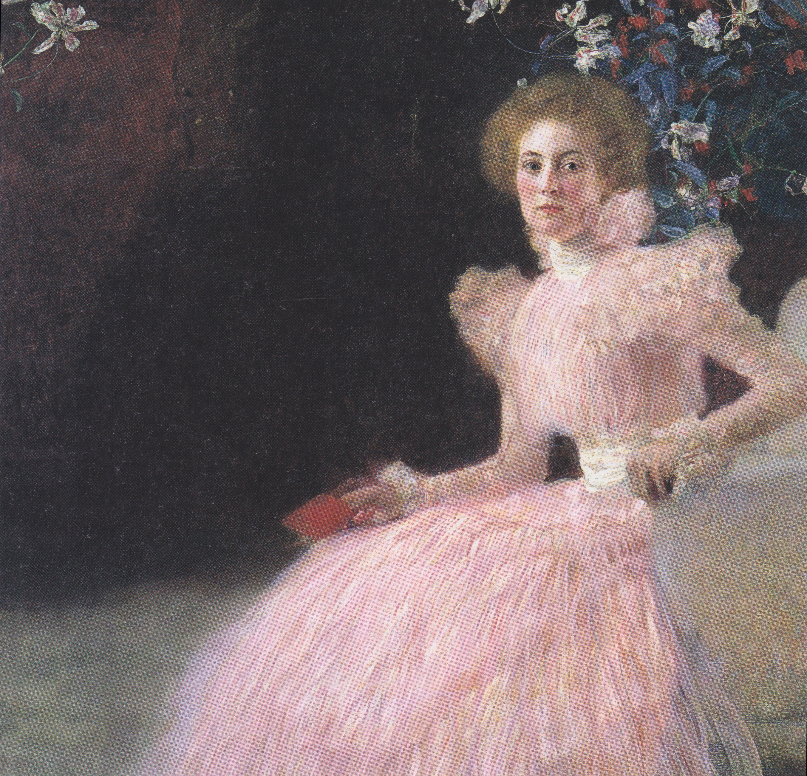
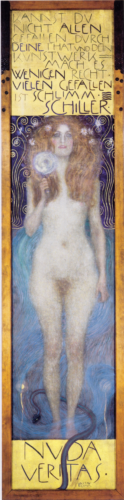
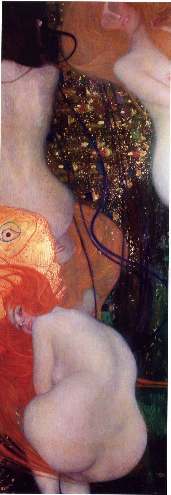
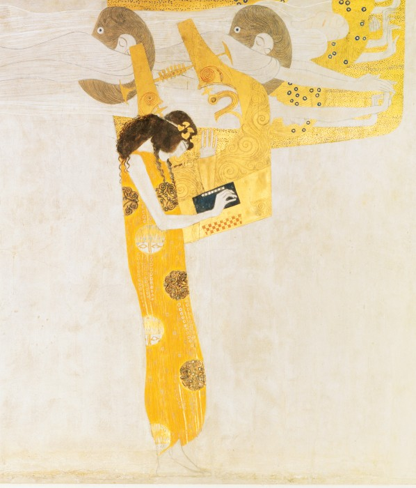
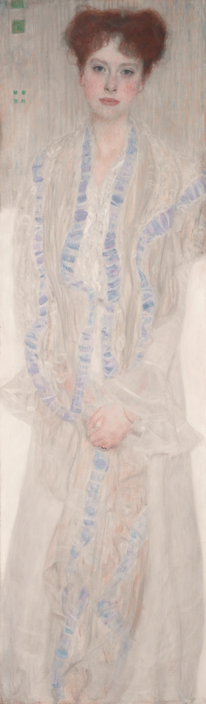
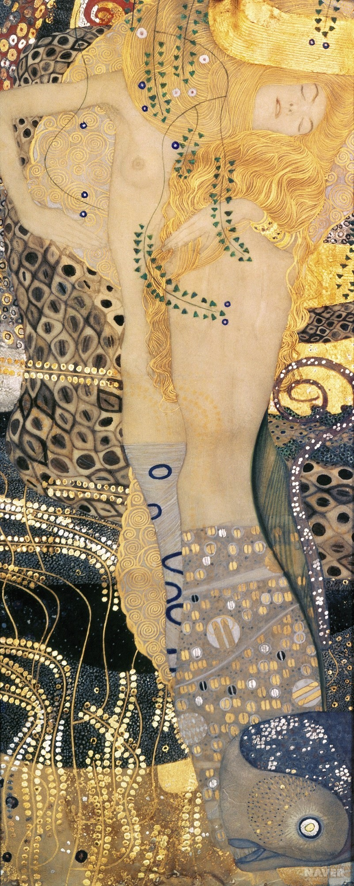

Adele Bloch-Bauer I (1907)
Judith I (1901)
The Kiss (1907-1908)
Do you want to see more?
There is a permanent Klimt-exhibition in the Belvedere-museum in Vienna!
This is an interesting video, explaining his art!
If you can't open video, click here
Biography
Gustav Klimt, son of Bohemian-born gold engraver Ernst Klimt Sr. (1834 – July 1892) and Anna Rosalia Klimt née Finster (1836 – February 1915), was born as the second of seven children in the former Vienna suburb of Baumgarten No. 4 (today 14th district, Linzer Straße 247; the birth house was demolished in 1966). Initially intended to follow his father's profession, Klimt received a scholarship and attended the Vienna School of Arts and Crafts at the Imperial and Royal Austrian Museum of Art and Industry from 1876 to 1883, studying under Ferdinand Laufberger, Victor Berger, Ludwig Minnigerode, Karl Hrachowina, and Michael Rieser. In the 1880s, he formed an artist collective with his brother Ernst and Franz Matsch, known as the "Gebrüder Klimt," which produced various works including theater decorations. In 1897, he co-founded the Vienna Secession and served as its first president. He received numerous commissions for decorative works, including the famous Beethoven Frieze and the Stoclet Frieze. Klimt was known for his controversial artistic style and intimate relationships with women, though he never married. He died in 1918.
Between Admiration and Criticism
Gustav Klimt, a controversial yet beloved artist of the fin de siècle, was known for his exceptional drawing skills and complex themes, often featuring erotic female figures. His career spanned various phases, from early Historicism-inspired works to later Jugendstil (Art Nouveau) pieces influenced by artists like Franz von Stuck and Jan Toorop. Despite initial criticism, Klimt's work later gained recognition for its pioneering contributions to modern art, influencing movements like Cubism and abstract painting. His paintings have fetched record-breaking prices at auctions, with "Portrait of Adele Bloch-Bauer I" being one of the most expensive paintings ever sold.
Gustav Klimt Artworks
| Image | Title | Year | Size, Material | Exhibition/Collection/Owner |
|---|---|---|---|---|
| Adele Bloch-Bauer I | 1907 | 138 × 138 cm, Oil on canvas | Neue Galerie, New York City | |
| Judith I | 1901 | 84 × 42 cm, Oil on canvas | Österreichische Galerie Belvedere, Wien | |
 |
The Kiss | 1907-1908 | 180 × 180 cm, Oil on canvas | Österreichische Galerie Belvedere, Wien |
|  | Bildnis der Sonja Knips | 1898 | 145 × 145 cm, Oil on canvas | Österreichische Galerie Belvedere, Wien |
|  | Nuda Veritas | 1899 | 252 × 55,2 cm, Oil on canvas | Österreichisches Theatermuseum, Wien |
|  | Goldfish | 1901-1902 | 181 × 66.5 cm, Oil on canvas | Kunstmuseum Solothurn |
|  | Beethovenfries (A Part of the Wall Painting) | 1902 | 73 m², Wall painting | Vienna Secession Building |
 |
Bildnis der Emilie Flöge | 1902 | 181 × 84 cm, Oil on canvas | Wien Museum |
|  | Bildnis der Gertrud Löw | 1902 | 149.5 × 45 cm, Oil on canvas | Private collection |
|  | Watersnakes I | 1904-1907 | 50 × 20 cm, Mixed media with gold leaf on parchment | Österreichische Galerie Belvedere, Wien |